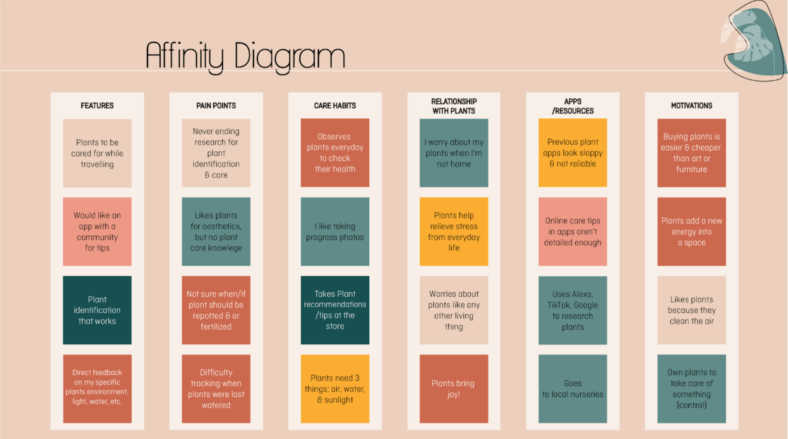
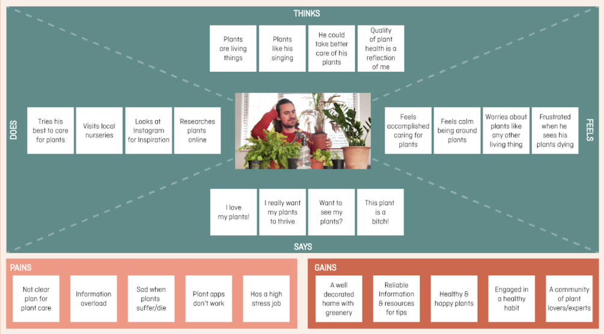
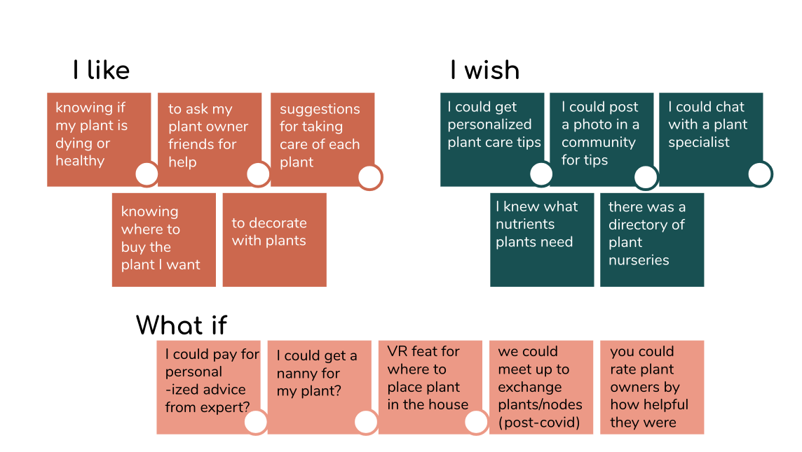
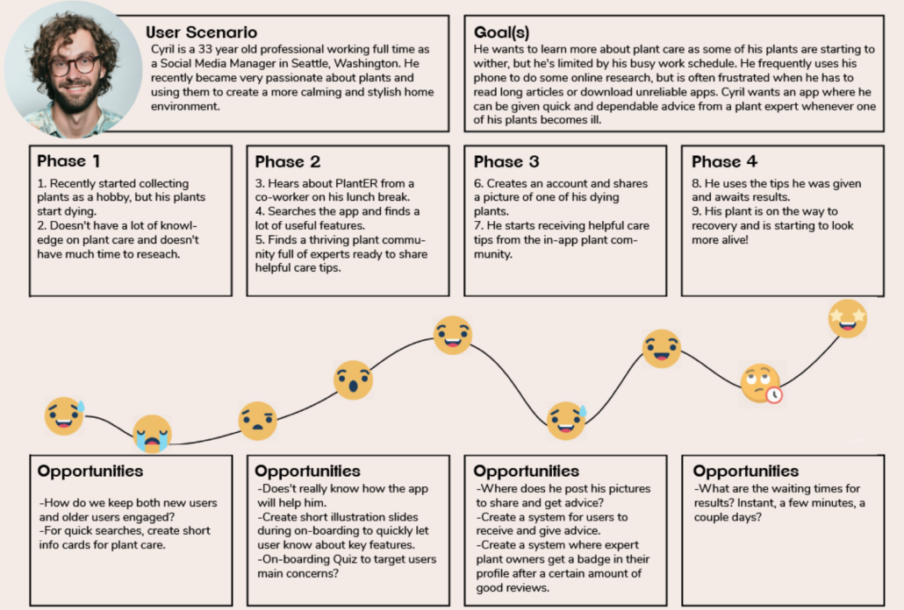
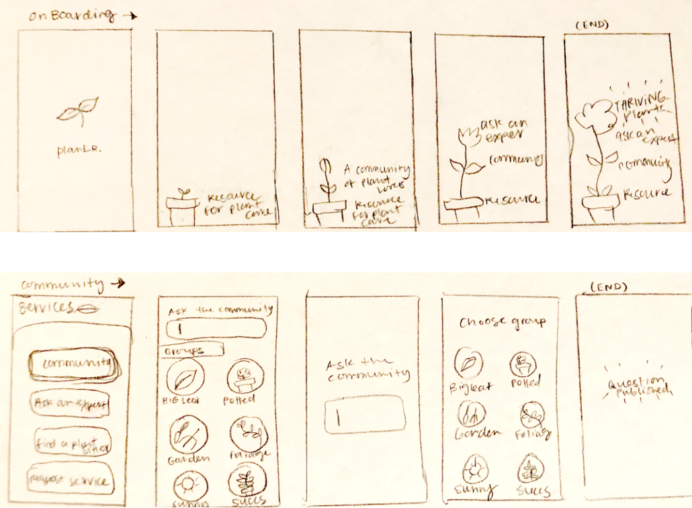

OVERVIEW Project: A mobile app that connects that plant owners to other plant owners and learn how to take care of their plants.
Role: UX Designer
Responsibilities: Interview and survey users, design a wireframe, design hi-fi onboarding experience and prototype onboarding experience interactions.
Project timeline: 3 weeks
Result: A completed mid-fi design that is ready to be tested and iterated into a hi-fidelity prototype
Understanding plant parenthood
The National Gardening association reported a 30% growth in plant sales in 2019 up to 1.7B revenue in the US. With COVID-19 our team of designers hypothesized that that number is only increasing with more people staying home. After interviewing both plant parents and beginner plant parents alike we noticed a problem: a growing number of them were frustrated at their lack of skills or support to take care of their plants. Thus, we embarked on an exploration of what would it be like to create a community for plant owners to connect while also learning and cultivating skills to ensure their plants thrive!
My teammate Xernan interviewing a plant parent
KEY INSIGHTS
In a survey of 103 respondants, 43% rated themselves as “average” at taking care of their plants.
People who have high-stress jobs desire a more aesthetically pleasing and calming home thus purchasing more plants.
Plant owners look online for plant care tips, but with little time to read through lengthy articles, they turn to apps for small, digestable information.
People seem to get into plant collecting with little knowledge of plant care, but once they gain some knowledge, they’re interested and willing to share what they learn with others.
After conducting user research through a survey and 9 user interviews, we then organized our insights into an affinity diagram and empathy map. This led to a final user persona to help guide the problem we hope to solve for that persona.

Above, we analyzed our findings and categorizing them.

Based on the affinity diagram categories we came up with we were able to determine the user thinks, says, does, and feel.
Problem to solve
How might we help plant owners, who have trouble keeping all their plants healthy, easily find a dependable resource to help them maintain a home filled with thriving greenery while connecting with other plant owners with similar frustrations find solutions together?
Ideation

Our ideation inspired concepts around community and forum.
The ideation process involved taking into account the insights we learned from our research and the problem statement to brain storm using the “I like,” “I wish” “what if” model. This generated some ideas with the common themes of community, trusted plant care tips and an empowerment of nurturing plants confidently.

This journey map shows the high and low points of the user's journey to discovering and using PlantTherapy.
From the ideation we zoned in the idea of “tips for plant care.” Knowing the user persona, we developed a user journey that follows Cyril, a busy professional, through the frustrations of caring for his plants to utilizing a plant app (then called PlantER). We indicate where he’s frustrated, where he’s happy, confused and then when he’s delighted–when he garners trusted tips to ensure his plants survive and thrive. Our team developed task flows based on the user journey and then user flows to led to sketching out the flow into screens.

I sketched this paper prototype depicting the screen flow for onboarding and asking the community a plant care question.
Build up high-fi prototypes for the main features, we aim for this before end of the course.
Develop the plant doctor expert network / nanny idea, which is quite unexplored and makes a good business case.
Users are very attracted and familiar to social media features related to plants, build up on the community feature.
Plants and pets aren’t so different, many users treat their plants as one of their family members. The connection between users and plants being living things can be further explored through UX writing and new iterations.
Revise and refine our subscription/payment models. Users were willing to pay a small amount to have a serious and fast plant care team in their hands.